Design
What is the ALiGN
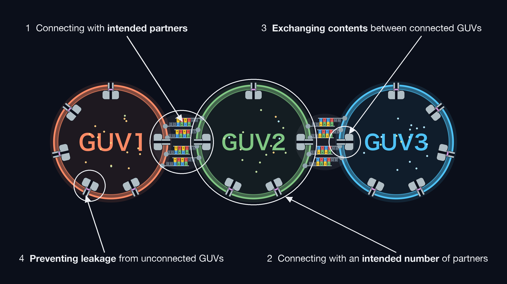
ALiGN is a reproduction of a cell-to-cell network that uses GUVs. In this project, we aim to realize a network of three GUVs (GUV1, GUV2 and GUV3). To connect three GUVs, we need two different connections, GUV1–GUV2 and GUV2–GUV3. Also, these two connections must not interfere with each other. If we can design these two connections independently, the same idea can be extended to three, four or more connections, and to larger networks of GUVs.
We achieve the four elements required to reproduce a cell-to-cell network as follows.
Connection (see Specific Connection Between GUVs)
1. Connecting with intended partners: DNA strands with different sequences on the GUV surface connect each GUV only to its intended partner (sequence-specific binding).
2. Connecting with an intended number of partners: very short DNA strands with weak binding and a tuned DNA surface density prevent aggregation, so each GUV connects only with an intended number of partners (weak binding and surface density control).
Material exchange (see Pore Formation for Material Exchange)
3. Exchanging contents between connected GUVs: α-hemolysin makes pores in the GUV membrane. This makes a path for the contents to move between connected GUVs.
4. Preventing leakage from unconnected GUVs: TRIMEB works as a lid on the pores. It prevents the contents of unconnected GUVs from leaking out.
Specific Connection Between GUVs
In ALiGN, we control the connections between GUVs in two ways: connecting with intended partners (sequence-specific binding) and connecting with an intended number of partners (weak binding and surface density control).
Sequence-Specific Binding
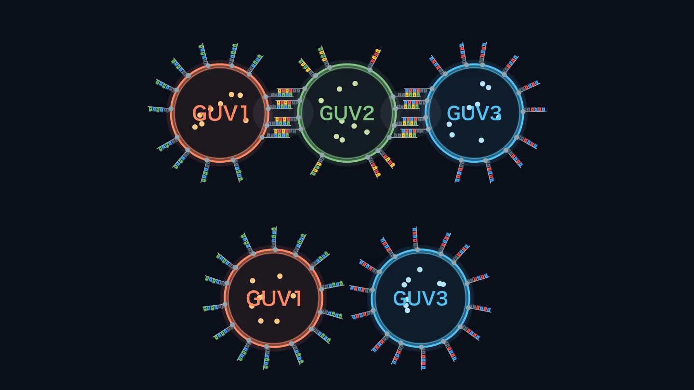
To connect only with intended partners, we place single-stranded DNA on the surface of each GUV and use the complementarity of DNA. A GUV can bind only to a GUV that has the complementary strand.
We prepare two pairs of DNA with different sequences: one for the GUV1–GUV2 connection and one for the GUV2–GUV3 connection. Because the sequences are different, each pair recognizes only its own partner. The two connections do not interfere with each other. As a result, GUV1 connects to GUV2 and GUV2 connects to GUV3, but GUV1 does not connect to GUV3.
Weak Binding and Surface Density Control
Weak Binding
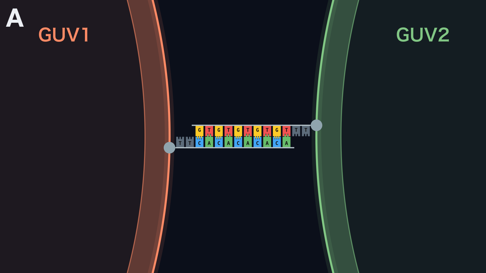
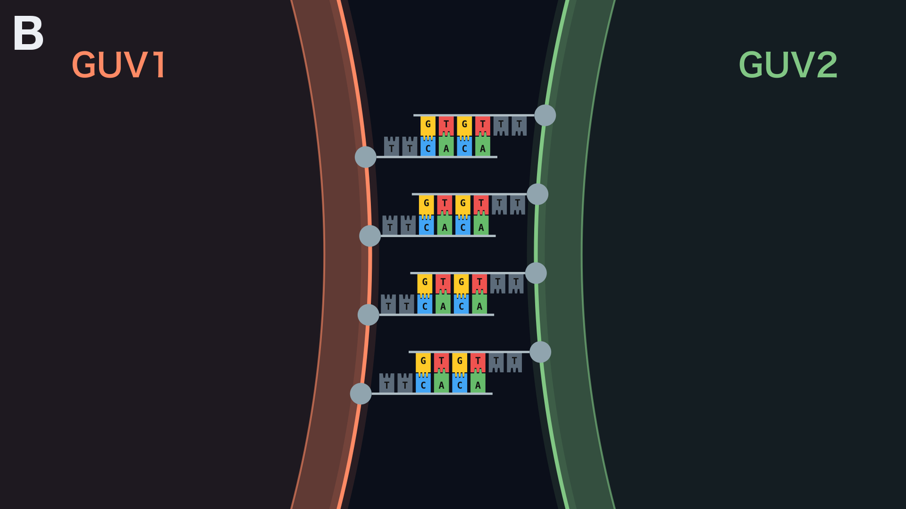
Connecting with intended partners is not enough to control the number of connections. Even if the DNA is specific, a GUV may connect to many partners of the same type at the same time, and GUVs may form large aggregates. In the study by Hadorn et al., GUVs with complementary DNA formed assemblies that were visible to the naked eye [1]. If a small number of DNA strands is enough to keep a connection, GUVs keep aggregating.
Therefore, we use very short 6-nt DNA strands and design each duplex to be very weak. Only 4 of the 6 bases actually pair. The remaining two bases (TT) work as a spacer next to the membrane. Using sticky ends as short as four bases has been proposed as a way to avoid aggregation for micrometer-sized particles coated with DNA [2]. One duplex cannot hold two GUVs together. A connection is kept only when many strands bind at the same time.
Surface Density Control
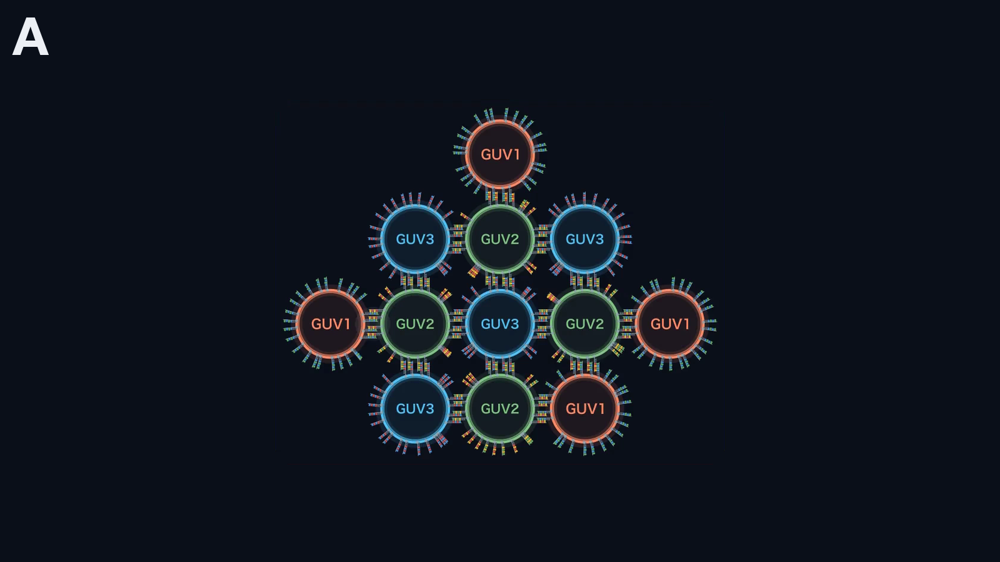
A: When there is too much DNA on the surface, the GUVs aggregate.
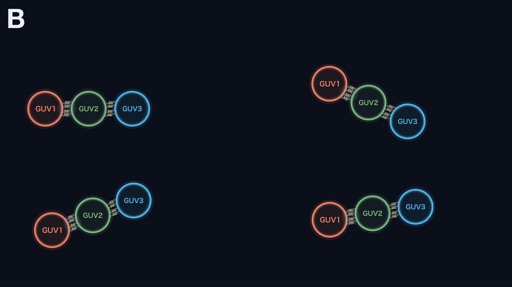
B: When there is just the right amount of DNA on the surface, the GUVs connect only in sets of three.
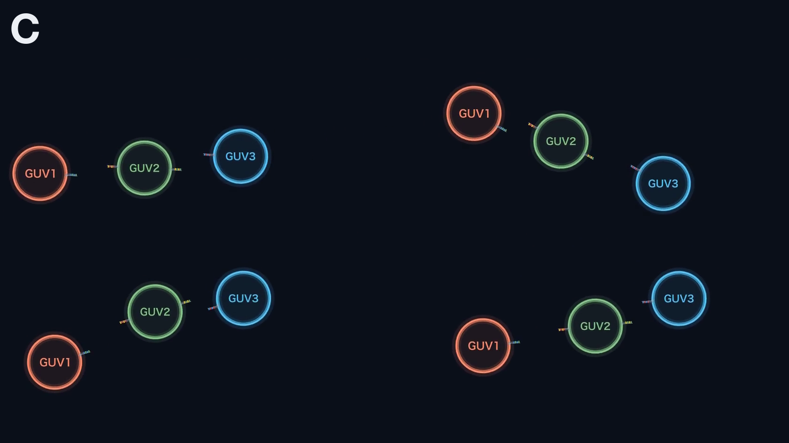
C: When there is too little DNA on the surface, the GUVs do not connect.
When a GUV connects to its intended partner, most of the strands on the facing surfaces are used for that connection. The few remaining strands cannot hold another partner, so the GUV does not connect any further. Therefore, the key parameter is the density of DNA on the surface of each GUV. By adjusting it, we aim to obtain many sets of exactly three GUVs connected as GUV1–GUV2–GUV3.
Pore Formation for Material Exchange
Controlling the connections between GUVs alone does not satisfy the four elements that ALiGN needs. Connected GUVs must also be able to exchange contents with each other, like cells that communicate with each other. To do this, we must meet two conditions at the same time: connected GUVs can exchange their contents, and unconnected GUVs do not leak their contents to the outside. We realize the exchange of contents between connected GUVs with α-hemolysin, and the prevention of leakage from unconnected GUVs with TRIMEB.
α-Hemolysin as a Pore
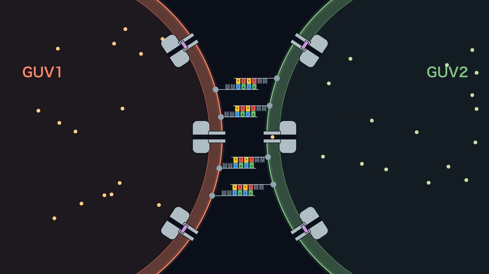
α-Hemolysin is a pore-forming protein from Staphylococcus aureus. Seven subunits gather in a lipid membrane and form a pore. The pore is 1.4 nm wide at its narrowest point, and small molecules can pass through it [3]. When engineered α-hemolysin is added to the outside of GUVs, pores form in the membrane, and an encapsulated dye leaks out [4]. By making α-hemolysin pores in the GUV membrane, we open a path for the contents of a GUV to move to its partner GUV.
TRIMEB as a Lid
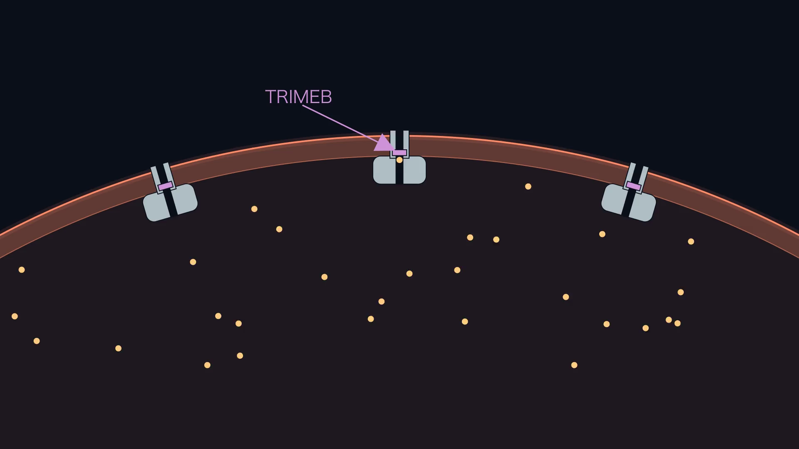
If the pores are only open, the contents leak out through the surface of a GUV even when the GUV is not connected to any partner. To prevent this, we use TRIMEB (heptakis(2,3,6-tri-O-methyl)-β-cyclodextrin), a derivative of β-cyclodextrin. TRIMEB binds reversibly inside the α-hemolysin pore and blocks it like a lid [3]. The more TRIMEB there is, the more slowly the contents leak through the pore [3].
While a GUV is floating alone, the lid prevents its contents from leaking out. When two GUVs are connected and their membranes come close to each other, the two GUVs can exchange contents [5]. In this way, material exchange happens mainly between connected GUVs.
DNA Sequence Design
These are the DNA strands used in ALiGN. Each strand on a GUV has a thiol (SH) modification, and the thiol fixes the strand to the GUV membrane.
6-nt DNA (Main Design)
These are weakly binding strands for connecting GUVs with an intended number of partners (see Weak Binding and Surface Density Control). Each strand has a 4-nt binding part (ACAC / GTGT or AGAG / CTCT) and a TT spacer on the membrane side. All strands have SH at the 3′ end.
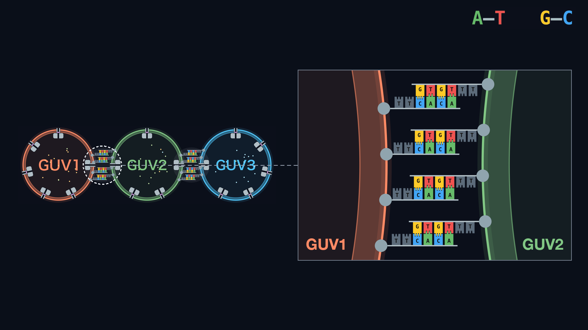
Pair 1 (GUV1 – GUV2)
Conn6_L1: 5′-ACACTT-3′ (SH)
Conn6_R1: 5′-GTGTTT-3′ (SH)
Pair 2 (GUV2 – GUV3)
Conn6_L2: 5′-AGAGTT-3′ (SH)
Conn6_R2: 5′-CTCTTT-3′ (SH)
23-bp DNA (Supporting Design)
These are strongly binding strands that form a stable 23-bp duplex. We use them first to show that DNA can control the GUV1–GUV2 connection and the GUV2–GUV3 connection separately (see Sequence-Specific Binding). SH is at the 3′ end on the L side and at the 5′ end on the R side.
The 23-nt sequences are taken from a published set of orthonormal 23-mers [6]. Every sequence in this set binds only to its own complementary strand and not to the other sequences in the set. Therefore, the GUV1–GUV2 pair and the GUV2–GUV3 pair do not interfere with each other.
We make these strands long because a 23-bp duplex is strong and hardly comes apart, so a few duplexes are enough to hold two GUVs together. If the binding is this strong, a GUV keeps taking new partners, so the number of partners is not controlled. When we use the 23-bp DNA, we do not aim to control the number of partners. We use it only to show that sequences can control the choice of partners, that is, the GUV1–GUV2 and GUV2–GUV3 connections.
How the two strands are joined is also important. A duplex is about 0.34 nm per base pair, so a 23-bp duplex standing between two membranes keeps the membranes about 8 nm apart. This makes the exchange of contents through α-hemolysin difficult. Therefore, we fix one strand at its 3′ end and the other at its 5′ end. The two strands pair side by side from the point where the membranes touch. The duplex then extends outward along the membranes, and does not stand between them. In this way, the two membranes can come close to each other.
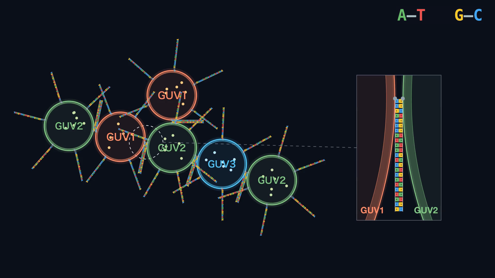
Pair 1 (GUV1 – GUV2)
Conn23_L1: 5′-GCATCTACACTCAATACCCAGCC-3′ (SH)
Conn23_R1: (SH) 5′-GGCTGGGTATTGAGTGTAGATGC-3′
Pair 2 (GUV2 – GUV3)
Conn23_L2: 5′-CTAGTCCATTGTAACGAAGGCCA-3′ (SH)
Conn23_R2: (SH) 5′-TGGCCTTCGTTACAATGGACTAG-3′
63-nt Scaffold DNA (Backup Plan)
The 63-nt scaffold DNA is a backup plan for the case where the weak 6-nt binding alone rarely starts a connection. The 23-nt end of the 63-nt scaffold DNA binds to the 23-bp anchor strand on one GUV. The remaining 40 nt is a repeat sequence (CA or CT, ten 4-nt units). It gathers many 6-nt strands of the partner GUV at one spot and creates a trigger for the connection.

Conn6_L1X: 5′-GGCTGGGTATTGAGTGTAGATGCCACACACACACACACACACACACACACACACACACACACA-3′
(binds Conn23_L1 on GUV1; the CA repeat gathers Conn6_R1 on GUV2)
Conn6_R2X: 5′-CTCTCTCTCTCTCTCTCTCTCTCTCTCTCTCTCTCTCTCTCTAGTCCATTGTAACGAAGGCCA-3′
(binds Conn23_R2 on GUV3; the CT repeat gathers Conn6_L2 on GUV2)
References for the Design
These are the papers we used for the design on this page.
[1] Hadorn, M., Boenzli, E., Sørensen, K. T., De Lucrezia, D., Hanczyc, M. M. & Yomo, T. Defined DNA-mediated assemblies of gene-expressing giant unilamellar vesicles. Langmuir 29, 15309–15319 (2013). https://doi.org/10.1021/la402621r ↩ Back to the text
[2] Wang, Y., Wang, Y., Zheng, X., Ducrot, É., Yodh, J. S., Weck, M. & Pine, D. J. Crystallization of DNA-coated colloids. Nat. Commun. 6, 7253 (2015). https://doi.org/10.1038/ncomms8253 ↩ Back to the text
[3] Thomas, J. M., Friddin, M. S., Ces, O. & Elani, Y. Programming membrane permeability using integrated membrane pores and blockers as molecular regulators. Chem. Commun. 53, 12282–12285 (2017). https://doi.org/10.1039/C7CC05423H ↩ Back to the text
[4] Harjung, A., Fracassi, A. & Devaraj, N. K. Encoding extracellular modification of artificial cell membranes using engineered self-translocating proteins. Nat. Commun. 15, 9363 (2024). https://doi.org/10.1038/s41467-024-53783-4 ↩ Back to the text
[5] Chakraborty, T. & Wegner, S. V. Cell to cell signaling through light in artificial cell communities: glowing predator lures prey. ACS Nano 15, 9434–9444 (2021). https://doi.org/10.1021/acsnano.1c01600 ↩ Back to the text
[6] Kitajima, T., Takinoue, M., Shohda, K. & Suyama, A. Design of code words for DNA computers and nanostructures with consideration of hybridization kinetics. In: Garzon, M. H. & Yan, H. (eds.) DNA Computing (DNA 13), Lecture Notes in Computer Science 4848, 119–129, Springer (2008). https://doi.org/10.1007/978-3-540-77962-9_12 ↩ Back to the text